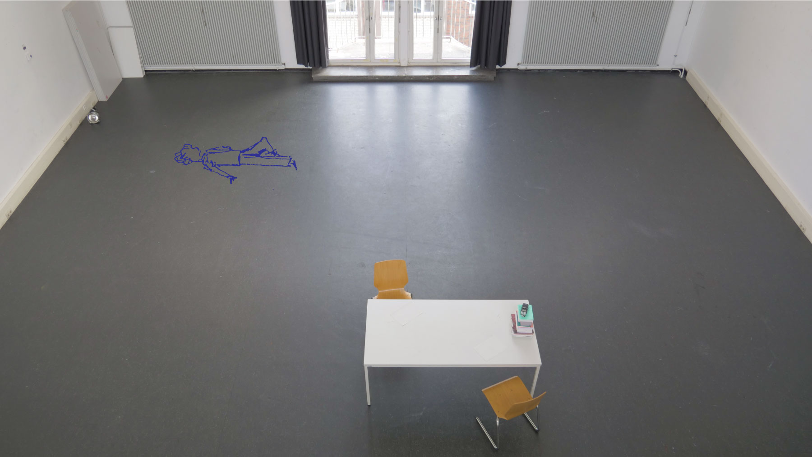
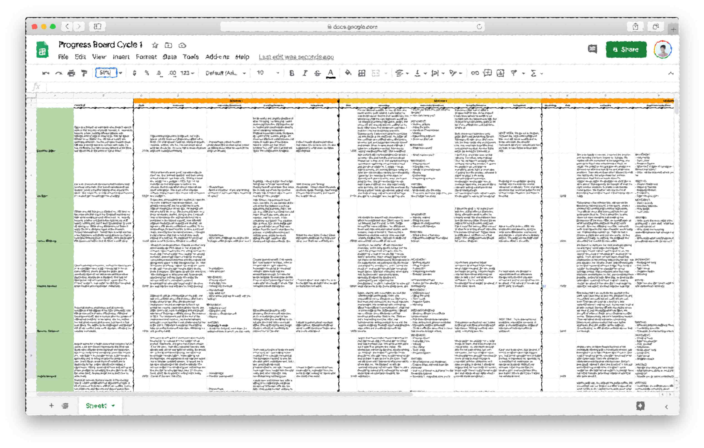

With the participants coming for their sessions, I had to think of a way to capture those moments. And ideally in an interesting way. At the very first meeting, I had an audio recorder laying on the table, but I never dared to ask if it was okay to record our conversations. Because it requires courage to ask, and I just met them. I feared it could create an atmosphere in which someone is feeling watched, generating the opposite effect of what I am trying to achieve, namely for participants to show themselves. Why document something in the first place?
“The mind is for having ideas, not holding them.” - David Allen
There are several motives for me to document this process, each one requiring a different method. The first motive is to be able to prepare better for the next session. When leading an open process, in which the next event is built on what happened in a previous moment, documenting becomes essential. There will always be a record of what I have prepared but it will never reflect what has happened during the session. Therefore, besides having my notebook with preparations, I would log each session in a spreadsheet, following a simple protocol. I’d write down a summary of the session, note the questions asked and exercises done, following up with insights/remarks and possible “homework” containing an outlook on the next week. To have a visual record of what happened inside the room, I've been sketching some of the interactions on laminated pictures of the empty space.

Filling out a spreadsheet helps me keep the overview and prepare the individual sessions. To catch the nuances of the activities and interaction, it’s important to fill it out soon after the meeting. As once you are seeing the next person, your brain is taking some of that holding space. To facilitate the work, I’ve started to make voice messages right after each meeting, summarising and commenting on the session. Like I would vent to a friend but then to myself. The original voice message and its content can then be inserted into the spreadsheet. Listen to an example below.
Subsequently, I started asking the participants to summarise the session on camera at the end, in which I decided to not film their faces after one participant made that request. It’s challenging to get interesting footage this way, but I like the idea to keep the main feature which forms an identity, hidden. An opportunity for me to experiment with alternative ways to catch a moment.
It’s only from session 3 that I gained the confidence (and trust) to ask the participants to film them. Not pointing the camera at the face and being able to make eye contact helps to stay natural. If I keep that rule, I’m sure I’ll be allowed to take out the camera more often, also while we are trying things out. Video could be used as a tool to capture creative moments and to give the footage back to the participants for sharing and reflection. During one session, in an unforeseen situation, we narrated and recorded an observation, a little story that a participant wrote. The audio story was then shared among peers to measure response. All of this makes up the second motive, to gather evidence of a process.
The final layer to the art of documenting, is to display a process in such a way that it can be reproduced. Involving both the reflection on individual interactions (spreadsheet/voice memos/process artefacts) as well as the consequent reflection on bigger structures and themes that emerge during the process. To give the work back, so one can understand and learn from what has been before, to make something new. This blog is an attempt to make OES public, becoming a resource for anyone interested.